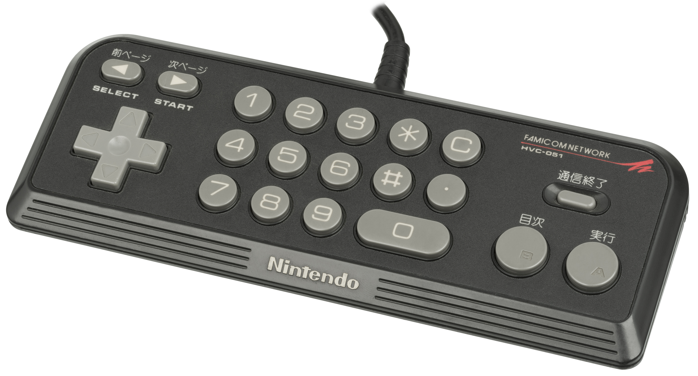
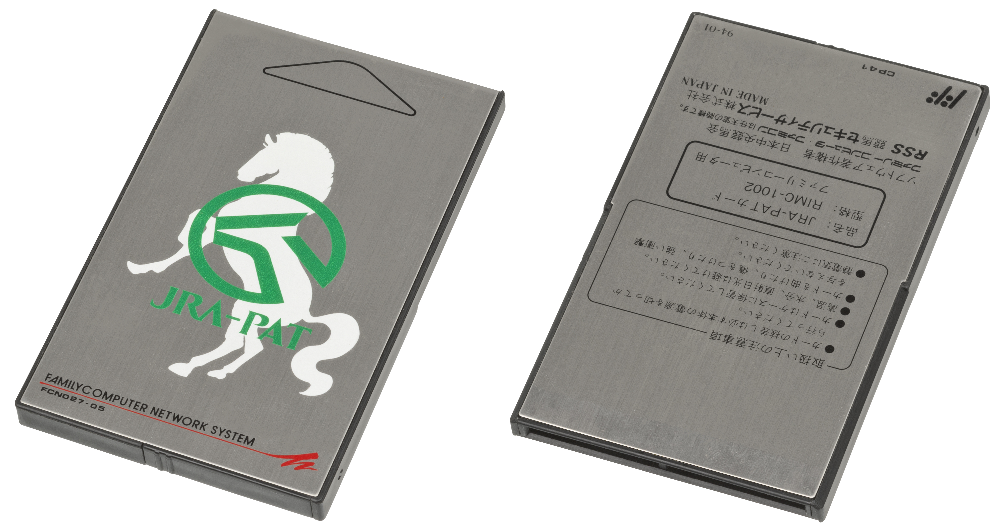

Famicom Network System / Famicom Modem
Japan's iconic game console becomes a stock trading and horse-betting terminal

Overview
The Famicom Network System, also known as the Famicom Modem, was a dial-up modem peripheral for Nintendo's Family Computer (Famicom) released in September 1988 exclusively in Japan. The modem clipped onto the bottom of the console and connected to NTT's DDX-TP packet-switched network. Users navigated information services using a special controller with an integrated numeric keypad — entering numeric codes to access stock quotes from Nomura Securities, home banking, weather forecasts, game reviews, and online horse-race betting.
The system was the brainchild of Nintendo president Hiroshi Yamauchi, who envisioned the Famicom — already present in one third of Japanese households — becoming an information appliance as essential as the telephone. Famicom designer Masayuki Uemura led hardware development at Nintendo R&D2, with Nomura Securities building the client/server software and NTT providing the network backbone. Approximately 130,000 modems were shipped over its three-year lifespan (1988–1991).
At its peak, the system captured 35% of Japan's online horse-betting market, with 100,000 units used for wagering, plus 15,000-20,000 users for stock trading and 14,000 for home banking. The service was discontinued in 1991 except for the Super Mario Club kiosk review database. The experience directly led to Nintendo's later satellite-based Satellaview network for the Super Famicom.
Deep dive
In 1987, Nintendo president Hiroshi Yamauchi foresaw the impending Information Age and wanted to transform Nintendo beyond a toy company into a communications company. The Famicom was in one third of Japanese households. Yamauchi believed it could become an appliance of the future, as pervasive as the telephone. He requested a partnership with Nomura Securities to create an information network service.
The modem attaches to the bottom of the Famicom. A special controller with an orange numeric keypad replaces the standard game pad. Software lives on ROM cards (resembling HuCards) rather than standard Famicom cartridges. The modem connected to NTT's DDX-TP packet-switched network over standard phone lines.
Users navigate tree-structured information services by entering numeric codes — similar to the Minitel's 3615 system but through a game console. Stock quotes, banking transactions, and horse-race bets all happen through the same interface that might have been running Super Mario Bros. an hour earlier.
Stock trading (Nomura Securities, Daiwa, Nikko), home banking, horse-race betting (JRA PAT system), weather forecasts, game reviews (Super Mario Club), online stamp purchases from the postal service, and a Bridgestone Tire employee fitness program. Five unreleased network-enabled game prototypes were developed.
Despite Yamauchi's intense personal commitment — multimillion-dollar advertising, personal meetings with financial industry representatives — the system struggled. NTT's DDX-TP network had reliability problems. The total home networking market was tiny. 130,000 units sold over three years. Its most popular application was horse-race betting. All services shut down by 1991 except Super Mario Club.
Nintendo of America announced plans with AT&T for a US service in 1989 that never materialized. An NES modem was tested with the Minnesota State Lottery but cancelled over concerns about underage gambling. The Famicom Modem experience directly led to the Super Famicom's Satellaview satellite data broadcasting network (1995).
Team & pioneers
- Hiroshi Yamauchi Nintendo president who conceived the communications-company vision and personally drove the project.
- Masayuki Uemura Lead designer of the modem hardware at Nintendo Research & Development 2.
- Nomura Securities Developed client/server software and the financial information database.
- NTT (Nippon Telegraph and Telephone) Provided DDX-TP packet-switched network infrastructure.
Media

